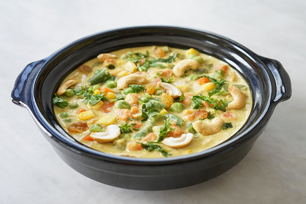

Navratan Korma
This navratan korma recipe is an Indian vegetable curry with nuts, paneer cheese, and an adjustable list of vegetables.It is in a tomato-cream sauce as opposed to the usual yogurt-based sauce. Navratan means "nine gems," so choose nine of the vegetable, nuts, and paneer ingredients; you can leave out the elements you don't want to use, or add them all so it is "ten gems" if you wish.
Ingredients
- 3 tablespoons vegetable oil, divided
- ⅓ cup mixed nuts (cashews, pistachios, almonds)
- 1 medium onion, grated
- ½ teaspoon garlic paste
- ½ teaspoon ginger paste
- 1 (8 ounce) can tomato sauce
- 1 teaspoon cayenne pepper
- ½ teaspoon ground turmeric
- 2 teaspoons ground coriander
- 1 teaspoon garam masala
- 1 cup water
- ¼ cup raisins
- ½ cup chopped carrots
- ½ cup chopped green bell pepper
- ½ cup chopped fresh green beans
- ½ cup green peas
- 1 cup chopped potatoes
- 4 ounces paneer, cubed
- ¼ cup milk
- ¼ cup heavy cream
- salt to taste
Directions
- Heat 1 tablespoon oil in a large skillet over medium heat. Place mixed nuts in the skillet, cook and stir until golden brown, and set aside. Stir onion into the skillet, and cook until tender. Mix in garlic paste and ginger paste, and cook 1 minute. Stir in tomato sauce, cayenne pepper, turmeric, coriander, and garam masala. Pour in water, and mix in raisins, carrots, green bell pepper, beans, peas, and potatoes. Bring to a boil. Reduce heat to low, and simmer 20 minutes, until potatoes are tender.
- Heat remaining oil in a separate skillet over medium-high heat, and cook the paneer on both sides, until golden brown. Drain on paper towels. Place in a bowl with enough hot water to cover for about 2 minutes to soften, then stir into the skillet with the vegetables.
- Stir milk and cream into the skillet with the vegetables and paneer. Bring to a boil, and continue cooking, 2 to 3 minutes. Season with salt to taste.